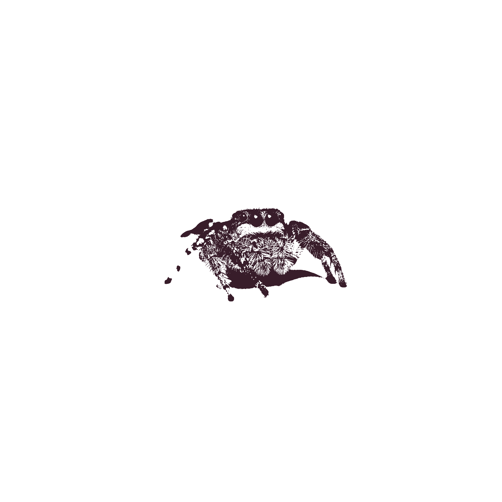

All spiders utilize changes in their hemolymph pressure, a fluid that is essentially their blood, to force the fluid from their cephalothorax into their legs. Jumping spiders do this process rapidly, the sudden change in pressure causing their legs to extend and letting them jump. They do not spin webs to catch prey, preferring to hunt by jumping their prey and quickly injecting venom. They have excellent vision in terms of arthropods, having a principal pair of eyes that move and three additional fixed pairs.
The species I have noticed is kept the most where I live is Phiddipus, being the US's largest jumping spiders. Species like the Phiddipus Audax, or Bold Jumping Spider, mature to have striking colors on their chelicerae that are different depending on sex.
Jumping spiders, originating from the largest family of spiders, Salticidae, are a fan favorite among casual internet scrollers and many people in the hobby. They definitely have the reputation of being the cutest spider and are often many people's introduction to spider keeping. Although these guys are often depicted as being cute and playful, they have a serious hunting style that makes them the little badasses of the spider world.
More Questions? Visit these cool sites!